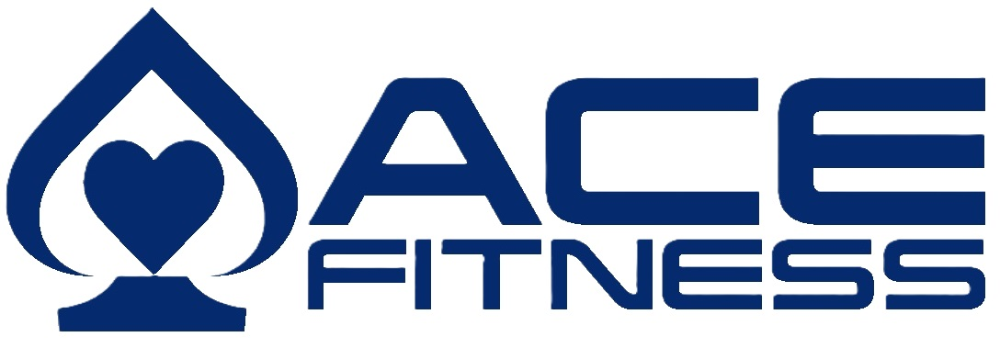

Paste the form link from the Settings tab (cell F6) of the tracker sheet, then print. Page 1 is the wall sign, page 2 is the procedure.

Upholstery Check-In
Scan every time upholstery changes hands.
QR code appears here
1Point your phone camera at the code
2Pick what you're doing & the client
3List each piece, submit
Back from Tucson? Log it right away: "Ready for reinstallation."
For technicians
Logging upholstery
You log upholstery at two moments: when you bring it back from a client, and when you bring it back from Tucson. Scan the QR code by the upholstery area. No login needed.
1
You bring upholstery back from a clientThe tech who removed it does this.
Scan the QR code.
Tap Checked in at shop
Type the client's name exactly as it is on the orange tape.
Add each piece on its own line, for example Head pad, then Back pad.
Pick your name and tap Submit.
2
You bring upholstery back from TucsonThe tech who picked it up does this, as soon as it's unloaded.
Scan the QR code.
Tap Ready for reinstallation
Pick the client from the list.
Uncheck any piece that didn't come back.
Pick your name and tap Submit.
That's it. Each submission emails the Director, who schedules the reinstall.
Don't skip step 2. If it isn't logged, the Director won't know the upholstery is back, and the reinstall won't get scheduled.
Good to know
Keep the orange tape with the client's name on every piece.
Log one client at a time. Three clients means three quick submissions.
Client not in the list? Pick Not in list and type the name from the tape.
Damage, wrong color or a missing piece? Write it in Notes.